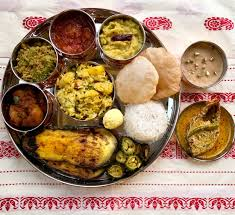

Bengali Food
Bengali cuisine is appreciated for its fabulous use of panchphoron, a term used to refer to the five essential spices,namely mustard,fengureek seed,cumin seed, aniseed and black cumin seed. The speciality of Bengali food lies in the perfect blend of sweet and spicy flavours.
Gujarati food

The traditional gujarati food is primarily vegetarian and a high nutritional value. The typical gujarati thali consists of varied kinds of lip smacking dishes. Gujarati cuisine has so much to offer and each dish has an absloutely different cooking style.
Mugilai food
.jpg)
Mughlai cuisine is one of the most popular cuisines, whose origin can be traced back to the times of mughal empire. Mughali cuisine consists of the dishes that were prepared in the kitchen of the royal Mughal emperors. Indian cuisine is predominatly influenced by the cooking style practiced during the mughal era.
Punjabi food

The cuisine of punjab has an enormous variety of mouth watering vegetarian as well as non vegetarian dishes.The spice content ranges from minimal to pleasant to high.punjabi food is usually relished by people of all communities. In punjab, home cooking differs from the restaurant cooking style.
South Indian food

The cuisine of South India is known for its light,low calorie appetizing dishes. The traditional food of South India is mainly rice based. The cuisine is famous for its wonderful mixing of rice and lentils to prepare yummy lip smacking dosas,vadas,idlis and uttapams.